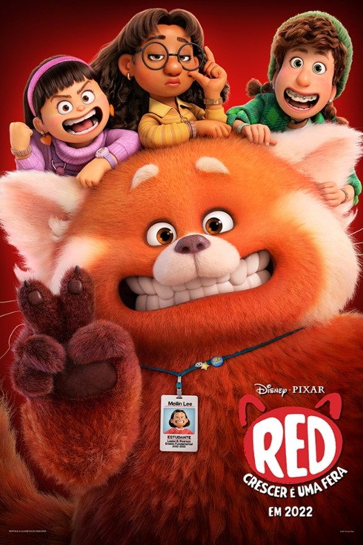
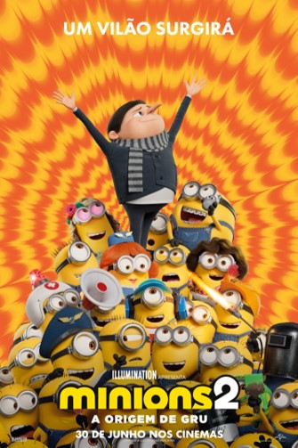
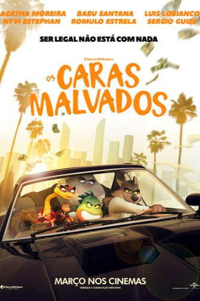

AS MELHORES ANIMAÇÕES DE 2022
Já estamos no segundo semestre de 2022 e, como de costume, é sempre bom relembrarmos a nata da nata do que já assistimos na explosiva indústria do entreterimento
Depois de separarmos s melhores longas-metragens do ano, chegou a vez de voltarmos nossa atenção para um dos gêneros mais adorados pelo público: as animações
Por isso, preparamos uma breve lista elencando as melhores produções animadas do ano (até agora), desde a trupe de vilões de Bad buys e Minions, até a impacável e saudosista Red.


